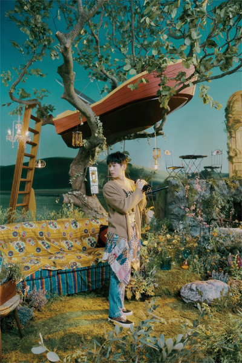

The 7th REPACKAGE
- 1. Atlantis
- 2. CØDE
- 3. Don't call me
- 4. 같은 자리 Area
- 5. Heart Attack
- 6. Marry you
- 7. Days and Years
- 8. I Really Want You
- 9. Kiss Kiss
- 10. Attention
- 11. Body Rhythm
- 12. 빈칸 Kind
* 타이틀을 클릭하면 가사를 볼 수 있습니다.
* To see the lyric, click on the title.
1. Atlantis (02:59)
미지의 그 영역을 찾게 한 순간묻혔던 감각들을 깨워낸 듯한 그곳은
중력보다 강하게 또 아주 깊숙하게
헤어나지 못할 끝까지 끌어당겨 날
It's like we're underwater
점점 깊어져 가
밀려오는 널 품에 안을게
내 숨을 가져가
My love goes deep deep deep
깊어진 Your ocean
짙어진 Emotion
My love goes deep deep
파란 속에 내 온몸을 맡긴 채
너를 향해 Yeah yeah yeah
좀 더 숨겨 놔 은밀히 다
어디든 가 I'm coming for you
파도치는 맘 버티지만
거칠수록 I'm falling for you
아찔하고 아득한 Falling
I'll dive into you
난 그대가 저기 빛나는 별이라며
고개를 들고 있었지만
그대 위치는 바닷속
늘 예상 밖의 Her 그대와 나 I miss
믿을 수 없어도 나는 향해 Atlantis
We're under the water
가늠할 수 없는 심해와의 Kiss
나를 휩쓸어 가
Uh huh uh huh
My love goes deep deep deep
깊어진 Your ocean
짙어진 Emotion
My love goes deep deep
파란 속에 내 온몸을 맡긴 채
너를 향해 Yeah yeah yeah
눈 앞에 널 만나 드디어 발견한
실재할지 몰랐던 그 감정
We're under the water
난 네 안에 잠겨
내 숨을 가져가
My love goes deep deep deep
깊어진 Your ocean
짙어진 Emotion
My love goes deep deep
파란 속에 내 온몸을 맡긴 채
너를 향해 Yeah yeah yeah
It's like we are under water
Like we're under water
It's like we are under water
너를 향해 Yeah yeah yeah
2. CØDE (03:15)
Don’t speak about, Be about it너란 답에 가까워지길 바라
차갑고 단조로운 너의 기호
알아 난 그 이상의 뭔갈 봐
Looking for the real baby here we are
비밀스런 Key 너를 열어 봐
아름답지만 풀지 못한
볼수록 황홀한 너는 누구야
Tell me tell me what it is
어느 순간 내 안에 스며든
낯선 어떤 언어
Oh show me now
널 움직이고 생각하고
숨 쉬게 한 그게 뭐인지
I need to know
내게 허락된 길 보인다면
널 더 알래 더 깊이
Let’s crack the CØDE
미지 속 답을 찾자
길을 잃은 채
헤매이던 밤
끝이 보일 때
넌 퍼져와 지배해
To my system
You’re giving me control
잠들었던 날
움직이는 CØDE
불러내
움직이는 CØDE
움직이는 CØDE
Crack the CØDE
Crack the CØDE yeah
It’s too much 그러지는 마
사소한 오류로도 나는
망가지잖아
‘Cause deep down
불안해하는 너를 알고 있어
안아줄게
We’re lost in the rain
So let’s run away
우린 서로뿐인데
Let’s crack the CØDE
미지 속 답을 찾자
길을 잃은 채
헤매이던 밤
끝이 보일 때
넌 퍼져와 지배해
To my system
You’re giving me control
잠들었던 날
움직이는 CØDE
불러내
도망쳐 날 따라와
우리를 둘러싼 현실을 버리자
따스한 온기를
믿어도 돼 괜찮아 Tonight
Don’t leave my sight
No!
Yeah CØDE
Oh no oh no
넌 퍼져와 지배해
To my system
You’re giving me control
잠들었던 날
움직이는 CØDE
불러내
You’re giving me control
Let’s crack the CØDE for nights
You’re giving me control
잠들었던 날
움직이는 CØDE
불러내
3. Don't call me (03:41)
Don’t call me (Check this out yo’ll)Don’t call me
Don’t call me (I don’t want you back, don’t call me)
Don’t call me
Don’t call me (I keep saying, next time은 없어 In your life)
Don’t call me
Don’t call me (Yeeaow)
Don’t call
깊어진 밤 집요하게
벨이 울려 It’s your calling
고집스럽고 지독하지
그게 바로 너 Still call
너는 쉽게 포기 못해
그 성질 버리지 못해
온종일 내 이름만 서치해
내 흔적들을 찾아 핥아 대
내 아침을 망치곤 해
그 패턴은 뻔해
관심 꺼줄래
I know where you came from
한때는 나의 Shawty
사라져 줄래 저리
Don’t think about calling
넌 못 버티겠지
집착뿐이겠지
나처럼 잘한 사람 없을 거니까
너도 참 피곤했지
전부 꾸며대니
머릿속 꽤나 어지러웠을거야
Don’t call me (미쳤어 넌)
Don’t call me
Don’t call me (You don’t know you waste my time)
Don’t call me
Don’t call me (느껴봐 넌 최악이야)
Don’t call me
Don’t call me (Wait I hate your call)
Don’t call
끝났어 너의 Love
Don’t want it now ooh
사랑하면 보내줘
Don’t want it now ooh
계속 말하잖아
Next time은 없어 In your life
네 사랑 난 이제 아냐
지워 날 잊어버려 제발
난 널 몰라
So 내게 전화하지 마
Sick of all your trash
진짜 늦었다니까
널 믿지 않아 You know why
날 속였다는 걸 알아
비극은 왜 사랑의 몫인데?
슬픈 에픽 속
그 끝을 보고 있네
넌 못 버티겠지
집착뿐이겠지
나처럼 잘한
사람 없을 거니 Ya
Don’t call me (미쳤어 넌)
Don’t call me
Don’t call me (You don’t know you waste my time)
Don’t call me
Don’t call me (느껴봐 넌 최악이야)
Don’t call me
Don’t call me (Wait I hate your call)
Don’t call
끝났어 너의 Love
Don’t want it now ooh
사랑하면 보내줘
Don’t want it now ooh
계속 말하잖아
Next time은 없어 In your life
네 사랑 난 이제 아냐
지워 날 잊어버려 제발
난 널 몰라
So 내게 전화하지 마
아직 허튼 꿈속에서 포기 못 했니
I’ll never pick up 지워버렸어
I’m gonna save my love
For the next call
(Sorry the number you have called has been disconnected)
Woo
Don’t call me (끝났어 Love)
Don’t call me
Don’t call me (I said I don’t want it now)
Don’t call me
Don’t call me (사랑했다면 보내줘)
Don’t call me
Don’t call me (Wait I hate your call)
Don’t call
난 찾을 거야 Love
더 아름다운
지독했던 너와 나
잊을 수 있는
계속 말하잖아
Next time은 없어 In your life
네 사랑 난 이제 아냐
지워 날 잊어버려 제발
난 널 몰라
So 내게 전화하지 마
4. 같은 자리 Area (03:28)
어두운 길 위로 희미한 불빛여전히 잠들지 못한 밤 Tonight
Oh night
Starry night
Ooh
채워지지가 않아 너의 빈자리
그날에 난 멈춰선 채 같은 Area
늘 같은 자리야 Ooh yeah
지워낼 수 없는 아픈 네 빈자리
더 지독히 짙게 남겨진 Area
Ooh yeah
The night is never gonna be the same yeah
스쳐 지난 잔상 다시 네가 보여
가만히 날 보고 웃어 Uh yeah
멍하니 있던 몸을 움직여
한 걸음 뒤 넌 사라져
손엔 잡히지 않는 너 Na na na-
채워지지가 않아 너의 빈자리
그날에 난 멈춰선 채 같은 Area
늘 같은 자리야 Ooh yeah
지워낼 수 없는 아픈 네 빈자리
더 지독히 짙게 남겨진 Area
Ooh yeah
The night is never gonna be the same yeah
어디쯤인 걸까 얼마나 온 걸까
어쩌면 아직 제자리
잃어버린 길 사이 Oh
Oh 털어내지도
Oh 삼켜내지도 Yeah 못 해
억지로 눈을 감아봐도 Same yeah
채워지지가 않아 너의 빈자리
그날에 난 멈춰선 채 같은 Area
늘 같은 자리야 Ooh yeah
지워낼 수 없는 아픈 네 빈자리
더 지독히 짙게 남겨진 Area
Ooh yeah
The night is never gonna be the same yeah
지나지 못해 갇힌 너와 내 기억들이
멋대로 불어나
Keep awake awake awake
후회 지워낼수록 번진
결국엔 더 짙어진 의미
Ooh-
또 말없이 다가와서
내 맘속을 헤집는 너
떠나지 못해 네가 없는 빈자리
그 누구도 채울 수가 없는 Area
매번 제자리야 Ooh yeah
지워낼 수 없는 아픈 네 빈자리
더 지독히 짙게 남겨진 Area
Ooh yeah
The night is never gonna be the same yeah
5. Heart Attack (03:00)
널 들이켜 내 온몸에 퍼진낯선 흥분을 받아들이려 해
더 뜨거워져 It’s not a simple crush
도망치지 않아 이건 꿈이 아냐
널 원하고 있어
차갑던 심장 네 손에
그 운명을 맡긴 채
You know this You know this
가혹한 전율의 끝에
흘러내리는 내 눈물은
환희로 빛나
‘Cause you are my boo
무너지는 Edge
순간 고동치는 Joy
Like a heart attack
나를 무너트리고
꿰뚫은 채로
영원히 머물
Like a heart attack
Heart goes pit-a-pat
벅찬 이 감정
The crazy kind of love
Like a heart attack
메말랐던 텅 빈 내 안에
네가 쏟아져 잠기고 있는 걸
날카로운 이 고통은 내 눈을 뜨게 하니
난 감당 할 수 있어 음미하고 싶어
좀 미친 것 같아
아무도 나를 이렇게
부숴버리지 못해
You know this You know this
빛처럼 퍼져가는 Crack
그 안은 너로 가득 차 있어
I just can’t believe
‘Cause you are my boo
무너지는 Edge
순간 고동치는 Joy
Like a heart attack
나를 무너트리고
꿰뚫은 채로
영원히 머물
Like a heart attack
무릎 꿇고 있잖아
My heart’s on overdrive every time
너 때문인데 위태롭게 빛난
그런 너인데 손에 잡힐 듯한
If this is love then I can’t deny
‘Cause you are my boo
무너지는 Edge
순간 고동치는 Joy
Like a heart attack
나를 무너트리고
꿰뚫은 채로
영원히 머물
Like a heart attack
Obey
Heart goes pit-a-pat
벅찬 이 감정
The crazy kind of love
Like a heart attack
‘Cause you are my boo
무너지는 Edge
고동치는 Joy
Like a heart attack
6. Marry you (03:01)
아무도 보이지 않는 곳으로떠나야겠어
저 남자들 안 보는 척하면서
But 다 Attention
눈이 부시겠지 새하얀 미소
넌 늘 빛을 내서
뭐 아닌척해도 솔직히 난
가끔은 불안해져
몰라 미친 소리 같겠지만 확실히 해
어디 도망 못 가게
네 번째 손가락을 줘
Girl I wanna marry you
Right here right now yeah
I wanna marry you
Girl I wanna marry you
Right here right now yeah
I wanna marry you
아직도 너무 예뻐
볼 때마다 숨이 멎지
I need a doctor
불치병인 듯 여전히 Lovesick
시간이 갈수록
더 심각해 I want you
아직도 내 삶의
Everything my love
정말 안 되겠어 더이상 아프지 않게
내 옆에 있어 주면 돼
네 번째 손가락을 줘
Girl I wanna marry you
Right here right now yeah
I wanna marry you
Girl I wanna marry you
Right here right now yeah
I wanna marry you
지금 아니면 왠지
후회할 것 같아
오늘인 듯해 Baby
너의 네 번째 손가락 위에 나
널 닮은 Diamond ring
바칠게 널 위해
지금 나와 약속해줄래 Tonight
Girl I wanna marry you
Right here right now yeah
I wanna marry you
(Oh I wanna marry you)
Girl I wanna marry you
Right here right now yeah (Marry you right here right now)
I wanna marry you (I wanna marry you)
I wanna marry you
7. Days and Years (03:57)
다투며 하루를 보내도다음 날엔 전부 잊은 듯해
또 다정해져 우린 다 별거 아닌 듯이
가끔은 소리를 지르고
낡고 녹슨 시소를 타는 것처럼
삐걱거리기도 해 아주 잠깐
모든 그 순간이 완벽하진 않아도
Days and years days and years
봐 여기 있을 거야 난 네가 여기 있는 한
그건 당연하잖아
네가 나를 지켜줬듯이 나도 지켜줄게 널
앞으로도 영원히
나와 같이 Days and years
Loving you for days and years
지금같이 Days and years
Loving you for days and years
우리가 나눈 이 감정이
사랑이 전부는 아니겠지
그건 분명해 말로는 설명 못 해
가끔은 고집을 피우고
깨져버린 어항에 담긴 물처럼
서로를 서운하게 해 아주 잠깐
모든 그 순간이 대단하진 않아도
Days and years days and years
봐 여기 있을 거야 난 네가 여기 있는 한
그건 당연하잖아
네가 나를 지켜줬듯이 나도 지켜줄게 널
앞으로도 영원히
나와 같이 Days and years
Loving you for days and years
지금같이 Days and years
Loving you for days and years
We'll go get it in the morning
그토록 기다려왔던
빛나는 시간 속에 Eh eh
모든 것을 맡긴 채
손을 뻗으면 마치 닿을 것 같이
너무 아름다운 너
더 높이 더 멀리 갈 수 있게
손을 잡아줘 Oh oh
봐 변함없을 거야 난
네가 그랬으니까 네게 배웠으니까
네가 나를 지켜줬듯이 나도 지켜줄게 널
앞으로도 영원히
나와 같이 Days and years
Loving you for days and years
지금같이 Days and years
Loving you for days and years
(나와 같이 Days and years)
많은 일이 있었고 또 일어나겠지
(Loving you for Days and years)
크고 작은 모든 장면에
(지금같이 Days and years)
다행이야 내가 너와 함께라는 게
(Loving you for days and years)
해가 뜨지 않는 날까지
나와 같이 Days and years
8. I Really Want You (03:18)
본능적인 이끌림이너를 향해 쏟아지지
제정신이 아닌 듯해
알고 싶은 Secret
저 하늘 위에 구름이
달을 가려 두듯이
달뜬 맘을 누르지
오늘만큼은
네게 더 다가가
And work it out
커져버린 끌림 속
I'll show you how
한 걸음 더 너도 다가와
절정으로 물든 맘이 터져 Now
I really want you Ooh babe
네가 내게 다가올 때
I really want you Ooh babe
내게 눈을 맞춰올 때
I really want you Ooh babe
눈이 살짝 휘어질 때
I really want you Ooh babe
살짝 손이 닿아올 때
즉흥적인 감정들이
조화롭게 만드는 Scene
네 예상이 빗나가게
자꾸 널 흔들지
더 퍼져가는 푸른빛
너의 뒤로 물드니
커져가는 물음이
이끄는 대로
네게 더 다가가
And work it out
커져버린 끌림 속
I'll show you how
한 걸음 더 너도 다가와
절정으로 물든 맘이 터져 Now
I really want you Ooh babe
네가 내게 다가올 때
I really want you Ooh babe
내게 눈을 맞춰올 때
I really want you Ooh babe
눈이 살짝 휘어질 때
I really want you Ooh babe
살짝 손이 닿아올 때
겉만 보고 판단은 말아 Bae
널 쳐다보는 눈 너무 많아 Bae
I can’t relax 숨을 쉴래
네 Aura 멀리서도 튀네
완벽이란 벽에 갇혔어
네 향긴 내게로 퍼져서
심장은 더 세게 뛰네
Up & down like elevator woo
하고 싶은 말들을 굳이
하나하나 고르지 마
아주 작은 움직임까지
전부 나를 들었다 놔
바로 지금 순간의 느낌
알고 싶어 모든 걸 다
넘쳐버린 마음은 이미
네게 더 다가가
And work it out
커져버린 끌림 속
I'll show you how
한 걸음 더 너도 다가와
절정으로 물든 맘이 터져 Now
I really want you Ooh babe
네가 내게 다가올 때
I really want you Ooh babe
내게 눈을 맞춰올 때
I really want you Ooh babe
선을 넘고 싶어질 때
I really want you Ooh babe
이제 우리 시작해 babe
9. Kiss Kiss (03:36)
Ooo ah look at you치솟는 짧은 현기증
제법 능숙하게 숨겨도
시선은 고정되잖아
우아한 표정
조각 같은 Posture
왠지 흩뜨리고 싶어
난 거리를 좀 더 좁혀가
지금부터 난 너의
속눈썹을 셀 거야
그 떨림을 느낀 뒤
잠깐의 짧은 닿음 끝에
너의 숨의 속도를 잴 거야
그래 다른 말론
I just wanna kiss
Kiss your lips
퍼져가는 Taste
짜릿하지
Eyes nose lips
더 가까이
이걸로는 부족하니
So come and gimme that
kiss kiss kiss kiss
Ooo ah
Come and gimme that
kiss kiss kiss kiss
Ooo ah
다시 한 번 더
Kiss kiss kiss kiss
다음 단계로 Move
빨라진 호흡의 춤 Ooo 미친 듯 뛰는 심장이
나인지 너인지 잘 몰라
살짝 얹은 손
그 느낌이 So sensual
Ooo 너에게 옮은 향
정말 소름 끼치게 좋은 것 같아
나의 입술로 너의
맘을 읽어 낼 거야
그 토씨 하나까지
색다른 방식으로
둘 사이의 언어를 만드는 거야
쉽게 말하자면
I just wanna kiss
Kiss your lips
퍼져가는 Taste
짜릿하지
Eyes nose lips
더 가까이
이걸로는 부족하니
So come and gimme that
kiss kiss kiss kiss
Ooo ah
Come and gimme that
kiss kiss kiss kiss
Ooo ah
다시 한 번 더
Kiss kiss kiss kiss
길고도 짧은 사이
공기가 바뀌어 가
시야가 온통 하얘 high해
마주친 코끝 사이
흐려져 가는 sight
아득해지잖아
Yeah I just need your kiss
Kiss your lips
Cherry berry taste
달콤하지
Eyes nose lips
말고 어디
이걸로는 부족하니
So come and give me that
kiss kiss kiss kiss
Ooo ah
Come and gimme that
kiss kiss kiss kiss
Ooo ah
다시 한 번 더
Kiss kiss kiss kiss
Ooo ah
Come and gimme that
kiss kiss kiss kiss
Ooo ah
다시 한 번 더
Kiss kiss kiss kiss
10. Attention (03:45)
반쯤 닫힌 네 창문을 타고낯선 휘파람 소리 들려오니
굳이 오지도 않는
잠에 빠지지 말고
지금 더 늦기 전에 내려와 봐
숨 가삐 달려온 네 평범한 하루 위
네 손을 꼭 잡고서
걷고 싶은 밤인 걸
별 계획 없이
Dancing round each other
이 순간 네 맘도
예외일 것 같진 않은데
어느새 우린 그 끝을 모른 채
무의식 깊은 한 곳이 동요돼
더 망설일 틈 없이
선을 넘은 그 순간
왠지 아슬한 Tension
놀라운 Motion
두 발이 땅에 뜬 듯해
온몸엔 살짝 힘을 빼
이 기분의 원인
네 무드로 채워줘 Feel the same
텅 빈 내 맘까지 다
다채로울 오늘 밤
아득한 저 우주 위
사랑이란 Chemistry
끝내 서로에게
Finally sinking in
우린 같은 걸 느껴
묘한 Emotion
그 모든 시작과 끝
이 감정에 Attention
Attention
눈부신 야경 위
펼쳐진 둘만의 여행
상상만으로 과분한
형용 못 하게 조금 거창한 yeah
이 밤의 루트를
다 예측할 순 없기에
길을 잃어도
네 옆에선 더 큰 세상을 봐
이대로 우린 시간도 잊은 채
서로의 깊은 한 곳이 공유돼
네 왼쪽 편에 선 채
손을 잡은 그 순간
왠지 아슬한 Tension
놀라운 Motion
두 발이 땅에 뜬 듯해
온몸엔 살짝 힘을 빼
이 기분의 원인
네 무드로 채워줘 Feel the same
텅 빈 내 맘까지 다
다채로울 오늘 밤
아득한 저 우주 위
사랑이란 Chemistry
끝내 서로에게
Finally sinking in
우린 같은 걸 느껴
묘한 Emotion
그 모든 시작과 끝
이 감정에 Attention
가장 밝은 별을 손에 쥔 듯한
보다 아름답고 원초적인 Light
그게 넌 역시 사랑이란 걸
알잖아
왠지 아슬한 Tension
놀라운 Motion
두 발이 땅에 뜬 듯해
온몸엔 살짝 힘을 빼
이 기분의 원인
네 무드로 채워줘 Feel the same
텅 빈 내 맘까지 다
다채로울 오늘 밤
아득한 저 우주 위
사랑이란 Chemistry
끝내 서로에게
Finally sinking in
우린 같은 걸 느껴
묘한 Emotion
그 모든 시작과 끝
이 감정에 Attention
Attention
11. Body Rhythm (03:13)
Won’t you follow my body rhythmCome and follow my body rhythm
계속 따라와 봐 끌리고 있잖아
Give up give up give up woo
한 손엔 너를 가득 담은 채
나른하게 눈을 감고 음미해
I got it yeah I want it
Woo yeah
판단은 필요 없어 이럴 땐
타고 내려 내 몸에 넌 이렇게
I got it yeah I want it
Woo yeah
가차 없이 넌 내 모든
여러 날을 또 여러 밤을
가져가고도 모자라
More more more and more more
Won’t you follow my body rhythm
Come and follow my body rhythm
달콤히 내 손 잡고 춤을 추면 돼
지금 Oh my my my
Won’t you follow my body rhythm
Come and follow my body rhythm
계속 따라와 봐 끌리고 있잖아
Give up give up give up woo
잠깐만 Hold up 너 나랑 춤춰
(뭐가 부끄러워)
네 Rhythm 쉿 이뻐
심장이 원래 이렇게 빨리 뛰었나
거의 두 배 우린 이제 Too fast
점점 더 빨라지는 숨소리
이 온도를 끌어줘 또 One two three
한 번 더 Baby come closer
Woo yeah
갖고 싶다면 언제든
휘두르든 또 휘어 감든
그 상태로 널 따라줘
More more more and more more
Won’t you follow my body rhythm
Come and follow my body rhythm
달콤히 내 손 잡고 춤을 추면 돼
지금 Oh my my my
Won’t you follow my body rhythm
Come and follow my body rhythm
계속 따라와 봐 끌리고 있잖아
Give up give up give up woo
(Body body) Body body rhythm
(Body body) Body body rhythm
첫 느낌대로 내게 스며들면 돼
그대로 좋아 Oh my
거침없이 넌 가끔은 떫고
단 것도 같아 넌 내게 매일
거짓이 아냐 그저 널 느껴
감미로워 모든 게
Won’t won’t won’t won’t won’t won’t
Won’t you follow my body rhythm
Come and follow my body rhythm
달콤히 내 손 잡고 춤을 추면 돼
지금 Oh my my my
Won’t you follow my body rhythm
Come and follow my body rhythm
계속 따라와 봐 끌리고 있잖아
Give up give up give up woo
(Body body) Body body rhythm
(Body body) Body body rhythm
끝을 말하지 마 그걸 원하잖아
Give up give up give up
Woo
12. 빈칸 Kind (03:21)
그 시간 속 너였던 나그 시간 속 나였던 너
흔들리던 계절마다
내 곁에 있어 준 넌 Kind
길을 잃고 헤매도
결국엔 너를 찾는 나
이제 난 알 것 같아 다
늘 비워 둔 빈칸
답을 적을 Time
출구가 사라진 미로 속을 걷고
홀로 한심해하고
손에 쥐어진 백지 같은 매일
쏟아지는 질문들
답을 모른 채 방황하던
내 앞에 나타나 준 건
You
You always know always know
You
You always know always know
그 시간 속 너였던 나
그 시간 속 나였던 너
흔들리던 계절마다
내 곁에 있어 준 넌 Kind
길을 잃고 헤매도
결국엔 너를 찾는 나
이제 난 알 것 같아 다
늘 비워 둔 빈칸
답을 적을 Time
차갑고 공허한 미래
어떤 기대 없이 버티고 있던
무너지려던 그때
그런 내게 손을 내밀어준 너
찢긴 문제지 같던
내 삶의 정답은 늘 너였어
You
You always know always know
You
You always know always know
그 시간 속 너였던 나
그 시간 속 나였던 너
흔들리던 계절마다
내 곁에 있어 준 넌 Kind
길을 잃고 헤매도
결국엔 너를 찾는 나
이제 난 알 것 같아 다
늘 비워 둔 빈칸
답을 적을 Time
Yeah
(Time)
Always know always know always know
(You’ve always been so kind)
(Kind)
You always know always know
(Time)
You always know always know
(Kind)
You always know always know
그 시간 속 너였던 나
그 시간 속 나였던 너
서툴던 계절을 지나
너라는 답을 찾은 나
-
SHINee 샤이니 'Atlantis' MV
-
SHINee 샤이니 'Don't Call Me' MV
-
SHINee(샤이니) - Atlantis @인기가요 inkigayo 20210418
-
Atlantis - SHINee(샤이니) [뮤직뱅크/Music Bank] | KBS 210416
-
SHINee 샤이니 'Atlantis' @Beyond LIVE – SHINee : SHINee WORLD
-
[사이드캠4K] 샤이니 'Atlantis' (SHINee Side FanCam) | @SBS Inkigayo_2021.04.18.
-
[안방1열 직캠4K] 샤이니 태민 'Atlantis' (SHINee TAEMIN FanCam)
.jpg)
